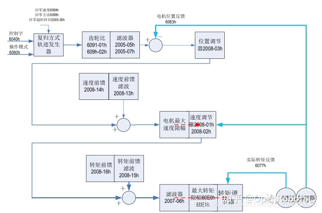

Home
本文转载自： https://zhuanlan.zhihu.com/p/359332250
周期同步位置模式（csp）
周期同步位置模式下，上位控制器完成位置指令规划，然后将规划好的目标位置 607Ah 上以周期性同步的方式发送给伺服驱动器，位置、速度、转矩控制由伺服驱动器内部完成
周期同步速度模式（csv）
周期同步速度模式下，上位控制器将计算好的目标速度 60FF 周期性同步的发送给伺服驱动器，速度、转矩调节由伺服内部执行。
周期同步转矩模式（cst）
此模式下，上位控制器将计算好的目标转矩 6071h 周期性同步的发送给伺服驱动器，转矩调节由伺服内部执行。当速度达到限幅值后将进入调速阶段
轮廓位置模式（pp）
此模式主要用于点对点定位应用。此模式下，上位机给目标位置 ( 绝对或者相对 )、位置曲线的速度、加减速及减速度，伺服内部的轨迹发生器将根据设置生成目标位置曲线指令，驱动器内部完成位置控制，速度控制，转矩控制

轮廓速度模式（pv）
此模式下，上位控制器将目标速度、加速度、减速度发送给伺服驱动器，速度、转矩调节由伺服内部执行
轮廓转矩模式（pt）
此模式下，上位控制器将目标转矩 6071h、转矩斜坡常数 6087h 发送给伺服驱动器，转矩调节由伺服内部执行。当速度达到限幅值将进入调速阶段。
原点回归模式 (hm)
原点回零模式用于寻找机械原点，并定位机械原点与机械零点的位置关系。

======================================================================
我的测试结果及程序
下面是我测试的代码：